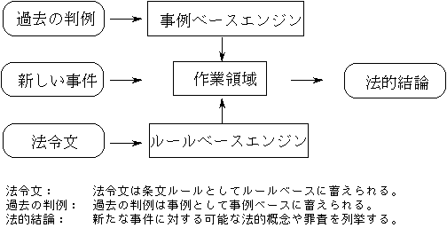

マ シ ン：PIM, Multi-PSI 環 境：PIMOS 言 語：KL1 ソース量：1.7 MB 文 書：マニュアル (英語)

法律の知識は法令文と過去の判例からなる。
法令文は法律ルールの集合であるから、法令文に基づく推論はルールベース推 論として実現している。
法律ルールはしばしば定義の曖昧な法律用語 (法的概念) を含んでいるため、 法的概念と具体的な事実との対応付けを過去の判例を参照し、その中の論理展 開を再利用する事例ベース推論をおこなう必要があり、これら2種類の推論を 相補的に組み合わせて法的結論を導く。
ルールベースエンジンは法律ルールを参照して、法的結論を演繹的に導く。こ のエンジンは並列定理証明器 MGTP (Model Generation Theorem Prover) をベー スに、いくつかの機能を追加したものである。
事例ベースエンジンは類似の事例を検索し、その事例のルールを新たな事例に 適用することによって、新たな論理を構築するという形算量の多い処理を並列 処理により高速化している。